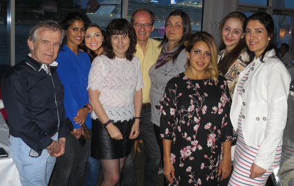

Velkommen til Ensjø Legesenter

Vår adresse er Ensjøveien 22B
Vi holder til på Ensjø, like ved Ensjø T-banestasjon.
Telefon: 23035010
Telefonen er åpen mandag-fredag: 08.30-11.30 og 12.45-15.00.Bestill gjerne time og resepter via helsenorge.no eller Helserespons.
Ekspedisjonen er åpen mandag-torsdag: 08.05-11.40 og 12.10-15.30, fredag: 08.05-11.40 og 12.40-15.30.
Laboratoriet er åpent mandag-torsdag: 08.15-11.40 og 12.10-15.15, fredag: 08.15-11.40 og 12.40-15.15.
Har du prøver som skal sendes eller du skal til skiftestua bør du møte minst 1 time før stengetid.
Ved behov for akutt legehjelp utenom våre åpningstider kontakt Legevakten.
Legevakten har telefon: 22 932293 og holder til i Storgata 40. Legevakten er åpen hele døgnet.
Du kan også møte opp på Legevakt Aker.
Ved akutte nødsituasjoner ring 113
Adresse:
Ensjø Legesenter, Ensjøveien 22B, 0661 Oslo
Tlf:23 035010, Fax:23 035011
INFORMASJON:
Senteret ligger sentralt mellom Kampen, Jordal og Ensjø like ved Ensjø T-banestasjon.
Ensjø er første stopp etter Tøyen på alle østlige T-baner fra sentrum unntatt Vestli og Ringen.
Se vår kartside
Shruti Prabhu Singh har overtatt Therese Thu Huynhs praksis.
Ali Zia Ullah jobber som vikar for de faste legene.
Via helsenorge.no tilbyr vi nå følgende tjenester:
-Timebestilling
-Reseptbestilling
-Beskjeder til Legekontoret
-E-konsultasjon
For E-konsultasjon betaler du vanlig konsultasjonspris (inkl. fakturagebyr, hvis du ikke betaler på legekontoret samme dag).
De andre tjenestene er kostnadsfrie
Tjenesten krever innlogging med BankID eller Buypass
Vi anbefaler at du laster ned helsenorge-appen til din mobiltelefon
Ris eller ros? Bruk gjerne postkassen på venteværelset.
E-resept er innført.
For deg betyr dette:
-Du får ikke lenger papirresept
-Du får utlevert medisinen på et hvilket som helst apotek ved å oppgi navn og fødselsdato.
-å bestille e-resept er gratis
Du kan lese mer om e-resept på helsenorge.no
Egenandeler fra 01.07.16:
Konsultasjon (spesialist/ikke-spesialist i allmennmedisin): 201/152,-
Enkel pasientkontakt uten time: 54,-
Ekspedisjonsgebyr og faktureringsgebyr: 59,-
Tillegg for blodprøver:54,-
For materiell m.m, se under "Priser"
Vi ber om at resepter bestilles minst 3 dager før du trenger dem.
Vanligvis vil bestillingsresepter bare bli gitt i påvente av time, hvis ikke annet er avtalt med legen.
Vi har kortterminal.
Egenandelstak:
Egenandelstak 1 for 2017 er kr.2205,-
Når du har nådd taket skal du ikke betale egenandel hos lege. Du må allikevel betale for materiell, attester o.l.
Barn under 16 år fritas for egenandeler. Det er heller ingen egenandel for svangerskapskontroller og svangerskapsrelatert sykdom.
Egenandelstak 2:
Egenandelstak 2 for 2017 er kr.1990,-
Behandling hos fysioterapeut, opphold på opptreningssenter og enkelte former for tannlegehjelp dekkes fullt ved oppnådd tak 2.
Fysioterapeuter med spesialiteten manuell terapi og kiropraktorer kan du nå kontakte direkte uten henvisning fra lege.
Bidragsordningen (§5.22)
Betaler du mer enn kr.1695,- for medisiner på hvit resept i løpet av et kalenderår, dekker HELFO det overskytende med 90%.
Dette gjelder ikke medisiner som kan kjøpes uten resept, egenandelen på blå resept, vanedannende medisiner (sterke smertestillende, sovetabletter og angstdempende medisiner) og visse andre medisiner (bl.a. slankemedisinene Xenical og Reductil). HELFO kan gi nærmere opplysninger.
Ta med deg kvitteringene og reseptene på det som du har kjøpt og HELFO vil tilbakebetale det som du har betalt for mye.
Transportrekvisisjoner:
Hvis du ikke er i stand til å ta offentlig kommunikasjon til legekontoret kan vi utstede rekvisisjon.
Vi er behjelpelig med å utstede rekvisisjon første gang du skal til sykehus eller annen spesialist henvist av oss.
Ved videre kontroller skal sykehuset/spesialisten skrive ut rekvisisjonen.
Bytte fastlege:
Du kan bytte fastlege på Arbeids- og velferdsetatens (NAV/HELFO) side.
Hvis legen har full liste vil denne bli åpnet når antallet har falt til 20 under listetaket.
Listetaket for våre leger:
Suzana Gojkovic: 1200
Shruti Prabhu Singh: 1340
Ramadan Kovaci: 1500
Helga Hamnes Aaberge: 1000
Svein Hamnes Aaberge: 1050